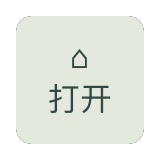
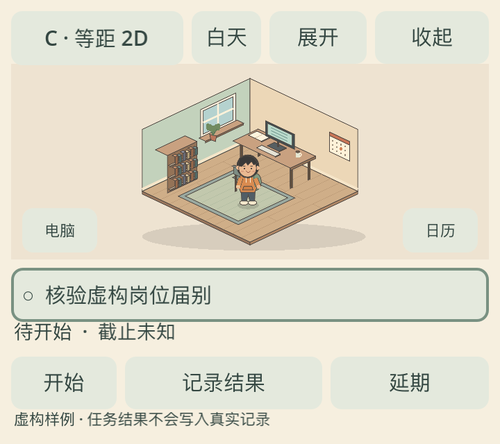

同一学生、同一组虚构行动、同一套操作界面。先看默认右上角小窗，再切换到完整应用。所有画面来自 Godot 实际运行；没有对外投递、能力认证或真实任务写入。
这是一轮可运行的美术比较。D 是低分辨率最近邻采样研究，不是精修像素素材。B 仍是基础几何角色的改良候选；用户尚未选择首版路线。
默认打开 360×320 小窗。点击顶部画风按钮可循环四种模式；日历切换任务，电脑打开结果面板。开始后填写虚构结果再保存，空结果会被拦截。短暂挥手只表达“已记录”，延期没有扣分或惩罚。
Godot --path prototype/godot res://comparison/main.tscn
展开 → 完整应用；收起 → 80×80 小房子入口；点击小房子恢复。完整应用提供置顶/普通窗与半透开关。快捷键：M 画风、N 昼夜、H 收起/恢复、T 置顶、O 半透、F12 保存当前应用画面。
运行与限制见 QA_RESULTS.md；评审门槛；来源和许可。字体来自本机 Godot 默认/系统回退，未复制字体文件。
透明、置顶、焦点和鼠标穿透需要实际操作系统窗口验证。下面仅是应用自身截图；具体跨应用检查记录见 QA_RESULTS，不能用 PNG 的 alpha 通道代替系统验证。

